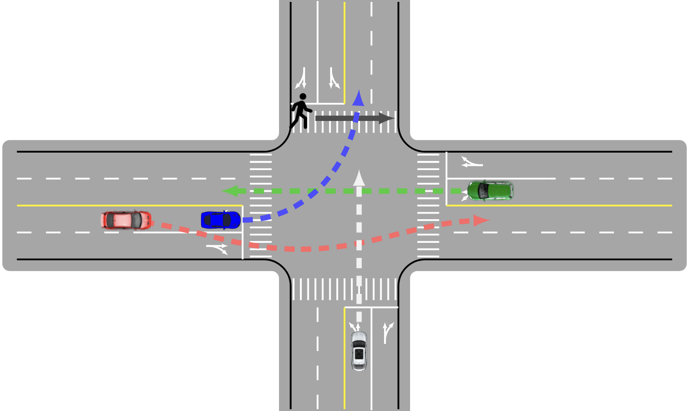
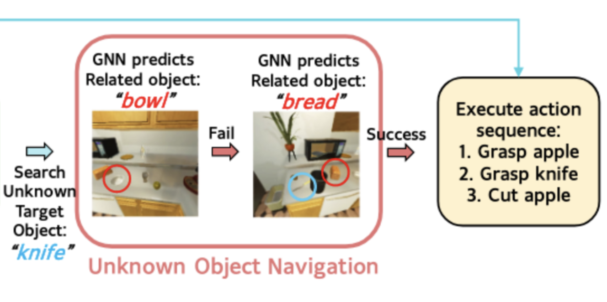

PhD student at University of Toronto, supervised by Steven Waslander. We're interested in perception and decision-making algorithms that can adapt to open-world settings.
Letian Wang
Hi there! I'm a Ph.D. student at the University of Toronto, where I am so fortunate to be supervised by the
brilliant Prof. Steven Waslander (Nicest
Steve Ever!) in the TRAIL Lab. I'm affiliated with Vector Institute.
I was a research assistant at
CMU RI,
UC Berkeley, and
HKUST RI,
and a research intern at
NVIDIA Research
and SenseTime Research.
My research interests include 3D vision, end-to-end driving, human-robot interaction, and behavior prediction.
I recently focus on developping generalizable decision-making and scalable perception systems, powered by
foundation models and learning paradigm that scales well with data.
Letian Wang is a Ph.D. student at the University of Toronto, supervised by Prof. Steven Waslander.
He was previously a research assistant at UC Berkeley and Carnegie Mellon University, and received his
Master’s and Bachelor’s degree with the highest honor from Beihang University in China. He was previously a
research intern at Nvidia and SenseTime.
His research interests lie in the intersection between autonomous driving, robotics, machine learning,
computer vision, with special interest in 3D vision, end-to-end driving, human-robot interaction,
and behavior prediction. He recently focuses on generalizable decision-making and scalable perception for
autonomous driving.
He has authored 1 book, was the winner of 2022 CARLA autonomous driving challenge, and won the best paper
award honorable mention at RA-L 2021, first prize in the National Challenge Cup 2017 (全国挑战杯一等奖, known as the
Olympics of science and technology competition for university students in China), and co-founded a start-up
in industrial UAVs.
Formal Bio G. Scholar Github LinkedIn Twitter
letianwang0 at gmail dot com

Some recent highlights from our research:
2024
Passed my PhD qualification, officially a PhD candidate now
LmDrive and SmartRefine get accepted to CVPR
I start my internship in NVIDIA Research Autonomous Vehicle
Research Group.
Invited by zdjszx.com to give a public
course on Intelligent/Generalizable Decision Making in Dense Environment.
Our ASAP-RL on efficient reinforcement learning for
autonomous driving is accepted by RSS.
Our ReasonNet
on end-to-end driving with temporal and global reasoning is accepted by CVPR.
Our book on Social Interactions for Autonomous
Driving is published by Foundations and Trends in Robotics.
One paper received the Best Paper Award - Honorable Mention of RA-L 2021.
I start my internship in SenseTime Research XLab.
National Scholarship, Beihang University
2018
May-Fourth Medal, highest honor for undergraduate at Beihang university.2017
First prize in National Challenge Cup (全国挑战杯一等奖, known as Sci./Tech. Olympics among universities in China)
Co-founding a start-up providing industrial UAVs for arial mapping and inspection.
2022.09 - Present
2023.09 - 2024.06
Research intern at the Autonomous Vehicle Group of NVIDIA Research, with Peter Karkus, Seung Wook Kim, Boris Ivanovic, Yue Wang, Sanja Fidler, and Marco Pavone. I worked on self-supervised representation learning via neural radiance field and generalizable NeRF, toward exploring potential foundation model for autonomous driving [Preprint].
2021.05 - 2023.02
2020.10 - 2022.05
Research assistant at the ICL Lab, with Changliu Liu and Yeping Hu, at the Robotics Institute of Carnegie Mellon University. I worked on generalizable motion prediction algorithms in different scenarios, and social interaction for autonomous driving. [NeurIPS'21, AAAI'22, book]
2019.10 - 2020.10
Research assistant at the MSC Lab, with Liting Sun, Wei Zhan, and Masayoshi Tomizuka, at UC Berkeley. I worked on socially-compatible behavior generation for autonomous driving [RA-L'21] (Best Paper Award Honorable Mention)
* denotes equal contribution
DistillNeRF: Perceiving 3D Scenes from Single-Glance Images by Distilling Neural Fields and Foundation Model Features
Letian Wang, Seung Wook Kim, Jiawei Yang, Cunjun Yu,
Boris Ivanovic, Steven L Waslander, Yue Wang, Sanja Fidler, Marco Pavone, Peter Karkus
Under Review
Webpage •
PDF •
Video
Visual CoT: Unleashing Chain-of-Thought Reasoning in Multi-Modal Language Models
Hao Shao, Shengju Qian, Han Xiao, Guanglu Song, Zhuofan Zong, Letian Wang, Yu Liu, Hongsheng Li
Under Review
PDF •
SmartRefine: An Scenario-Adaptive Refinement Framework for Efficient Motion Prediction
Yang Zhou, Hao Shao, Letian Wang, Steven L Waslander,
Hongsheng Li, Yu Liu
IEEE/CVF Conference on Computer Vision and Pattern Recognition (CVPR 2024)
Outperform all published ensemble-free works on Argoverse 2 leaderboard (single
agent track).
PDF •
Code
LmDrive: Closed-Loop End-to-End Driving with Large Language Models
Hao Shao, Yuxuan Hu, Letian Wang, Steven L Waslander,
Yu Liu, Hongsheng Li
IEEE/CVF Conference on Computer Vision and Pattern Recognition (CVPR 2024)
First work to bring LLM into closed-loop end-to-end autonomous
driving.
Webpage •
PDF •
Code
Accelerating Reinforcement Learning for Autonomous Driving using Task-Agnostic and Ego-Centric Motion Skills
Tong Zhou*, Letian Wang*, Ruobing Chen, Wenshuo Wang,
Yu Liu
IEEE/RSJ International Conference on Intelligent Robots and Systems (IROS 2023)
PDF •
Efficient Reinforcement Learning for Autonomous Driving with Parameterized Skills and Priors
Letian Wang, Jie Liu, Hao Shao, Wenshuo Wang, Ruobing
Chen, Yu Liu, Steven L Waslander
Robotics: Science and Systems (RSS 2023)
PDF •
Code
ReasonNet: End-to-End Driving with Temporal and Global Reasoning
Hao Shao, Letian Wang, Ruobing Chen, Steven L
Waslander, Hongsheng Li, Yu Liu
Conference on Computer Vision and Pattern Recognition (CVPR 2023)
Winner of CARLA Autonomous Driving Challenge 2022
PDF •
Code

Social Interactions for Autonomous Driving: A Review and Perspectives
Wenshuo Wang, Letian Wang, Chengyuan Zhang, Changliu
Liu, Lijun Sun
Foundation and Trends in Robotics (Book)
PDF •
Safety-Enhanced Autonomous Driving Using Interpretable Sensor Fusion Transformer
Hao Shao*, Letian Wang*, Ruobing Chen, Hongsheng Li,
Yu Liu
Conference on Robot Learning 2022
First Place on the CARLA Leaderboard (Sensor Track)
PDF •
Code
Efficient Game-Theoretic Planning with Prediction Heuristic for Socially-Compliant Autonomous Driving
Chenran Li, Tu Trinh, Letian Wang, Changliu Liu,
Masayoshi Tomizuka, Wei Zhan
IEEE Robotics and Automation Letters 2021
PDF •

Human Instruction Following: Graph Neural Network Guided Object Navigation
Hongyi Chen, Letian Wang, Yuhang Yao, Ye Zhao,
Patricio Vela
The IEEE/CVF Conference on Computer Vision and Pattern Recognition (CVPR) 2022, Workshop on Embodied
AI
PDF •
Transferable and Adaptable Driving Behavior Prediction
Letian Wang, Yeping Hu, Liting Sun, Wei Zhan,
Masayoshi Tomizuka, Changliu Liu
arxiv
PDF •
Online Adaptation of Neural Network Models by Modified Extended Kalman Filter for Customizable and Transferable Driving Behavior Prediction
Letian Wang, Yeping Hu, Changliu Liu
AAAI Conference on Artificial Intelligence, Workshop on Human-Centric Self-Supervised Learning
PDF •
Hierarchical Adaptable and Transferable Networks (HATN) for Driving Behavior Prediction
Letian Wang, Yeping Hu, Liting Sun, Wei Zhan,
Masayoshi Tomizuka, Changliu Liu
Conference on Neural Information Processing Systems (NeurIPS 2021), Workshop on Machine Learning for
Autonomous Driving (Spotlight)
PDF •
Socially-Compatible Behavior Design of Autonomous Vehicles with Verification on Real Human Data
Letian Wang, Liting Sun, Masayoshi Tomizuka, Wei
Zhan
IEEE Robotics and Automation Letters 2021 Best Paper Award - Honorable
Mention
PDF •
Overall Design and Control of Coaxial Tilt Rotor Vertically Take-off-and-Landing UAV
Letian Wang, Yuhan Lu, Yibo Liu, Yicong Fu, Bonan Xu, Jingyu Zhao, Qi Qian, Yifan Yan, Weijun Wang
First prize in National Challenge Cup 2017 (全国挑战杯一等奖, known as the Sci./Tech. Olympics among universities in China).
Starting point for our UAV start-up journey for the later 2 years
Some of my slides can be found here
2024
Toronto TechTalk
ZDX Public Course
2023
IV Workshop on Social Behavior for Autonomous Vehicle2021
NeurIPS Workshop on Machine Learning for Autonomous Driving2020
INFORMS Annual Meeting2024
Co-organizer, the 2nd International Workshop on Socially Interactive Autonomous Mobility (SIAM) at IV‘242023
Program Commitee, Machine Learning for Autonomous Driving Symposium at NeurIPS'23
Co-organizer, the 1st International
Workshop on Socially Interactive Autonomous Mobility (SIAM) at IV‘24
2022
Program Commitee, Workshop on Learning for Autonomous Driving at NeurIPS'232020+
Reviewer, IJRR, RSS, NeurIPS, CVPR, ICRA, IROS, ML4AD, TNNLS, TVT, ITS, IV